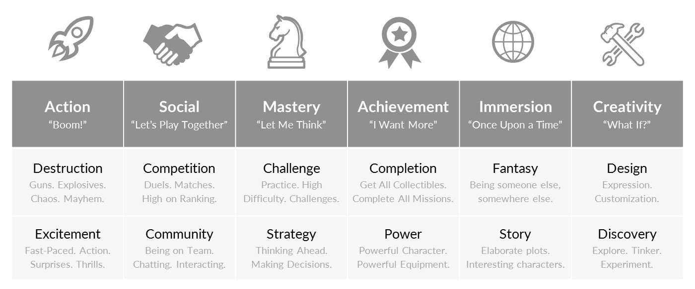

Game Design#
There are general principles which help create better games. In fact, there is an entire industry dedicated to the design of games with academic research into gamer’s preferences and how to influence gamers. The material we cover here is a simple introduction into a topic so extensive that it covers a variety of different careers.
If you are interested in diving deeper, I can suggest checking out The Psychology of Video Games.
First, what makes a game a game?
Interactive Challenges#
Games can be described a interactive challenges. This indicates the two prerequisites aspects of games - interactivity and challenge. Without either of these aspects a game is no longer a game.
Interactivity#
Interactivity means that players have some control over the outcome. They provide input and then the game interacts with the input to produce outcomes. The input could be pressing a button, or moving a mouse, or even rolling a dice (this game definition isn’t limited to computer games).
Without interactivity the game becomes a form of passive entertainment, like watching a movie or reading a book.
Challenge#
Games normally have their own set of challenges that the player needs to overcome to win. This could be explicit like a quest or implicit like scoring points for completing a task.
Without challenge the game becomes play, like playing with a toy.
So we know games need both interactivity and challenge, but how do we incorporate these to create a good game. Is it the graphics and sound or something else?
Game Mechanics#
Game mechanics are the basic rules and interactions that make games fun to play. Mechanics are how we incorporate both interactivity and challenge to produce our game. For example, if games were a car, then game mechanics are the engine. The graphics, characters, storylines and music are the bodywork. It doesn’t matter how good the bodywork is, if your engine is poor, so is your car’s performance.
The best games have great game mechanics, superb graphics, believable characters, spectacular music and compelling storylines, but it is the mechanics that make games stand out from other media. Movies can also have superb graphics, believable characters, spectacular music and compelling storylines. Books can have believable characters, and compelling storylines.
We are going to look at eight basic mechanics, four that address challenge and four that address interactivity. They are:
Challenge |
Interactivity |
|---|---|
Difficulty |
Choices and Control |
Goals |
Control Overload! |
Rewards |
Unfair Punishment |
Subgoals |
Audio Feedback |
Challenge Mechanics#
Different players want different kinds of challenges. Quantic Foundry is a market research firm who specialises in assessing games. Their Gamer Motivation Model has 12 different motivations and is based on the idea that different gamers want different types of challenges.

If you are curious to see what your Gamer Profile is, you can take a survey.
We will look at four simple mechanics that improve a game’s challenge
Difficulty
Goals
Rewards
Subgoals
Difficulty#
First some neuroscience, beating a challenge causes our brains to release a little shot of dopamine. Dopamine is our reward hormone and makes us feel pleasure. But there is a trick to getting that release, the difficulty needs to be at the right level. That means challenges must be easy enough to achieve, but hard enough to be worth it.
If the challenge is too hard, players will not experience a success and will loose interest. On the other hand, if the challenge is too easy then the game becomes boring. So, you need to pitch the difficulty at the right level.
You also need to consider that your players will have different skill levels. Therefore, the appropriate level of challenge will vary according to the player.
If you consider our game, we have already introduced some mechanics that effect its difficulty, but we can do more.
The Problem |
Impact |
The Solution |
Implemented |
|---|---|---|---|
One asteroid touch ends the game. |
Make it too hard |
Add spaceship lives |
Yes |
Spaceship escapes asteroids by moving outside the screen |
Makes it too easy |
Restrict spaceship movement to inside the screen |
Yes |
Not change in difficulty |
Not accessible to all skill levels |
Add a difficulty menu which changes asteroid frequency and speed |
No |
Goals#
Challenges are created by setting goals for players to achieve. It is important that goals are clear and a players progress towards achieving them is obvious. Therefore, players need to know what their goals are and how they are progressing in achieving those goals.
Goals also have an interesting impact called the what-if effect. The what-if effect occurs when a player fails at something and then thinks “What if I had …” and thinks of things they could do differently. The Dark Souls series of games thrives on this effect.
While the what-if effect can be felt at anytime, it is most keenly felt the closer a player gets to a goal. If the player falls just short of a goal, they will think of many ways they could have ensured success. To this extent, game designers tend to increase difficulty the closer a player gets to a goal. This is why you find bosses at the end of quests.
Judging Difficulty
Game developers are notoriouly bad at judging the diffifult of their own game. That’s because they know how their games works and, therefore, find them easier. To judge the difficulty of you game, have someone else play your games and provide feedback on the difficulty
In our game of Space Rescue, we don’t have any goals, just endlessly collecting astronauts. Lets change that:
The Problem |
Impact |
The Solution |
Implemented |
|---|---|---|---|
Player doesn’t have a goal |
No goal or what-if effect |
Set a number of astronauts rescued goal |
No |
Player doesn’t know what the goal is |
Goal is unclear |
Display number of astronauts to be rescued |
No |
Player doesn’t know their progress towards the goal |
Progress is unclear |
Display number of astronauts rescued |
No |
Player might achieve goal too quickly |
Might not experience “what-if” effect |
Reduce the rate of astronaut spawns as more astronauts are rescued |
No |
Rewards#
Rewards are extremely important for maintaining interest the challenges. They make the player feel better about the effort taken to complete the challenge. They also make the player more likely to complete other challenges.
It also helps to occasional give bonus rewards for no reason, for example, power-ups at random intervals. The random aspect is important, as it gives hope that a pickup may come at any point. This encourages players to ‘stick with it’ in desperate situations, and adds to the “what if…” effect.
In our game we have a very simple reward system of increasing the score for rescuing astronauts and shooting asteroids, and decreasing the score for shooting astronauts. May be we should add more.
The Problem |
Impact |
The Solution |
Implemented |
|---|---|---|---|
No reward for reaching goals |
Reducing motivation and undermines the goal |
Give big bonus points for reaching goal |
No |
No random bonus reward |
Reduces what-if effect and excitement |
Have Zork randomly spawn life and shield bonuses |
No |
Subgoals#
Subgoals provide players with short-term or optional challenges. This provides the player with short-term objectives on the way to achieving their goal. In addition, optional subgoals are a good way of providing extra challenges to advanced players.
What kind of sub-goals can we add to our game?
Subgoal |
Application |
|---|---|
To shoot demons without taking damage |
- Count the number of asteroids shot in a row |
Try to not accidently shoot the astronauts |
- Each shot astronaut subtracts one from the goal total |
Interactivity Mechanics#
Interactivity is about putting the player in control. Remember, without interactivity games become a passive experience.
A good games leave the player feeling they are in control of the game. They believe they have influence on the outcomes and the decisions they make will significantly impact the gameplay. It is important to note that this is subjective. For example, the upgrading stats in a RPG has negligible effect, especially since the difficulty of the enemies also increases.
A bad game minimises the player’s sense of control. For example, being taken-out in a PVP match by someone who is obviously using a cheat.
These are some of the common mechanics for promoting the feeling of control:
Choices and Control
Control Overload!
Unfair Punishment
Audio Feedback
Choices and Control#
Players need to be provided with choices that seem to have a real effect on the outcome of the game. They may result in different gameplay options, or seem to provide an advantage, while in reality their impact is minimal. For example, choosing different characters in Mario Cart.
If a choice is perceived to provide a real difference to gameplay, by giving players more control, it gets the player more involved.
We can incorporate choice into our game by letting the player choose between two types of ships. Each ship will have a special power they can activate for a short period by pressing the ctrl button.
Ship |
Special Power |
|---|---|
Attractor |
When active astronauts move towards the ship |
Swerver |
When active ship’s speed increases |
Control Overload#
Giving the player too many choices can be self-defeating. Too many choices can overwhelm a player and reduce their sense of control. The extent that this is true depends on the type of game being played. A first person shooter that requires the use of all the keys on a keyboard will result in overload, where-as this is the standard expected for a slight simulator.
In simple games like our, it is worth remembering that most people can only remember five to nine things at once. Therefore, you need to limit the number of elements of gameplay that a player has to hold in their memory.
If you need to include more elements, then outsource the remembering to the UI. For example, the bottom of the Minecraft screen displays all the items bound to the 1 to 0 keys.
Another option is to make one key perform different functions according to the context. Instead of having one key for opening doors, and another key for talking to NPCs and another key to pick up items, modern RPG will have one interact key that will perform all these tasks depending on what the player is looking at.
Our game has minimal features and control, so this is not a concern at the moment. Although, it is something you should take into consideration when adding features to the game.
Unfair Punishment#
Punishing players for something that is beyond their control quickly destroys their sense of control. These punishments are usually unintended and can vary greatly. For example, the below experiences can erode a players sense of control:
lag between a button press and an action
game crashes which loose progress
enemy players shooting while clipped into a wall
dialogue options with unexpected outcomes
It is important to make sure that the game is operating correctly, even when the player is not using it as intended.
Lets consider our game:
Unfair punishment |
Solution |
|---|---|
A laser shot at an asteroid can pass through the asteroid and hit an astronaut |
Have the asteroid disappear when it collides with the first object |
Audio Feedback#
We have already established that confusion reduces a player’s sense of control. A effective way of reducing confusion is through reinforcing behaviour during gameplay. We already do this using the score. The score increases when the player does the correct thing, and decreases when the player does the wrong thing.
Another effective way of reinforcing is through using sound. Sounds can feel positive and negative and can provide feedback to player on what they are doing. This informs player if their interactions are good or bad. It is a way of automatically instructing the player.
Lets look at which game events can have sound attached to them:
Event |
Sound Effect |
|---|---|
Shooting laser |
Positive |
Shooting asteroid |
Positive |
Saving astronaut |
Positive |
Ship collides with asteroid |
Negative |
Shooting astronaut |
Negative |
Enhancing the game#
Now that you have a better understanding of game mechanics and ways you can enhance the game. Choose some of the suggested mechanics and implement them.